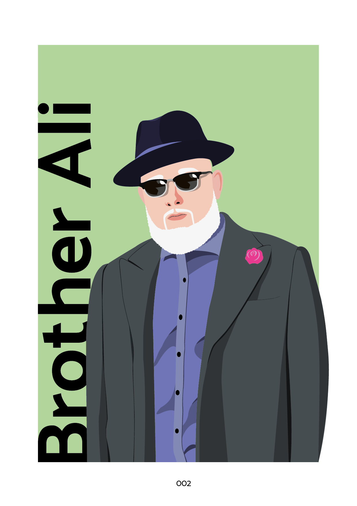
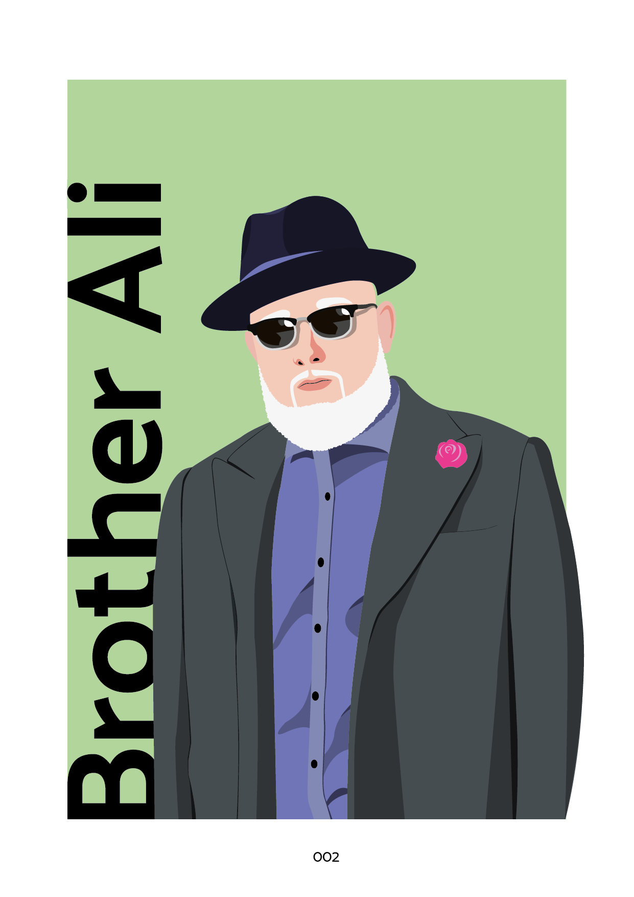

Frontend Development
HTML, CSS, JS
Deze opdracht gaat vooral over het responsive maken van een pagina d.m.v. mobile first design. Deze gehele pagina moest zelf gecodeerd worden, en het design van Lowlands moet er op worden toegepast. Ik ben er momenteel nog meer bezig, maar hier is de pagina te bekijken.
Op telefoon veranderd de pagina naar één kolom, en wordt het menu een verborgen. Dit wordt gedaan omdat het anders een groot deel van het scherm in zou nemen.
HCI
Human Computer Interaction ging om het toepassen van design principes, en het ontwerpen van een site die bij de doelgroep en opdracht gever past. Bij dit ontwerp voor Ijscuypje was het belangrijk om het proces van bestellen inzichtelijk te maken voor de gebruiker en de gebruiker op de hoogte te houden waar hij zich bevindt.
Internet-standaarden
HTML, CSS
Internet standaarden was mijn eerste ervaring met HTML/CSS. Tijdens dit vak leerde je semantisch correct coderen. Ik vond HTML/CSS leuk om mee te werken. Ik ging ook dieper in op de stof dan nodig was, want ik wilde de site responsive maken en dit leerde je niet tijdens dit vak. Mijn eerste website is hier te bekijken
Programmeren
JS
Programmeren ging om het leren van Javascript. Bij dit project had ik een tamagotchi gemaakt. Deze heeft constant eten nodig om te overleven. Elk eten heeft een ander effect op Snorlax. Als de health balk leeg is moet Snorlax terug in de pokéball om weer tot leven te komen. Deze opdracht toont het niveau van mijn Javascript. Ik zou hier graag beter in willen worden.
Posters
Illustrator
 



Vormgeving
Bij deze opdracht moest ik een bestaand verhaal vormgeven (99 verhalen, Molovich). Dit verhaal moest vormgegeven worden op basis van je eigen beschrijving van het verhaal. Met de beschrijving van het verhaal in je hoofd moesten er foto's gemaakt worden op straat. En deze foto's gaven vervolgens de basis waarop je het verhaal ging ontwerpen.